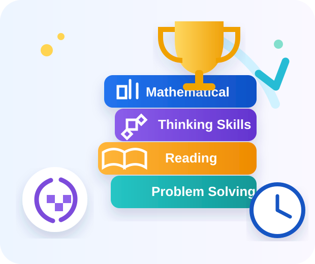

OC Preparation
Reasoning & Thinking
Build deeper reasoning and problem-solving confidence with focused OC preparation.
- OC focusedDedicated OC practice pathway
- Reasoning practiceThink, compare and solve
- Progressive challengeBuild from core skills into harder reasoning

Reasoning TodayBrighter Tomorrow
OC learning pathway
A focused preparation route that builds reasoning, accuracy and confidence step by step.
OC Reasoning Pool
Practise from the dedicated OC mathematical reasoning pool.
›Build Thinking Skills
Strengthen logic, evidence, ordering and other reasoning habits.
›Read & Apply
Improve close reading and understanding before moving into harder reasoning tasks.
›Timed OC Mock
Work through a timed mixed set without hints, then review your result.
›Why families choose SkillUP
Structured practice to build confidence without making preparation feel overwhelming.
Track real progress
Use results to identify strengths and the skills that need another attempt.
Structured practice
Move from foundation questions into stronger reasoning in a clear order.
Build exam confidence
Practise reasoning habits and timed work before a high-pressure test setting.
Focused preparation
Keep OC material separate from the standard NAPLAN pathway.
Ready for the Opportunity?
Start with focused OC practice and build from there.